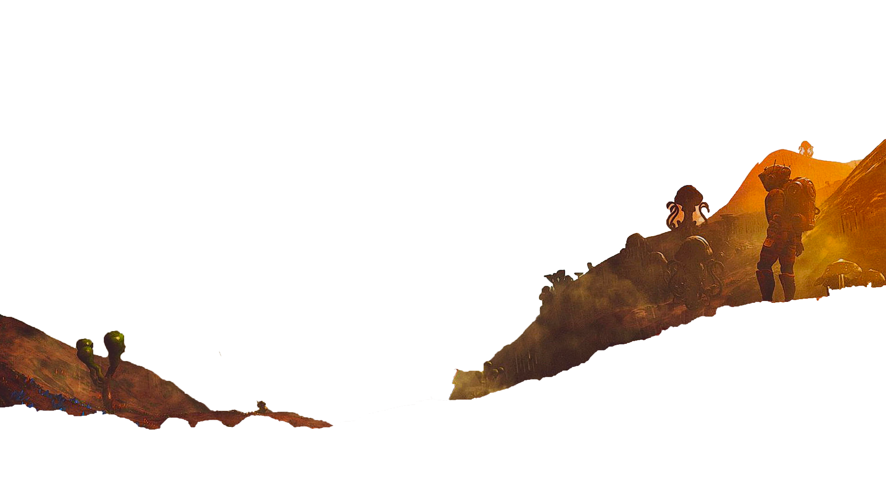
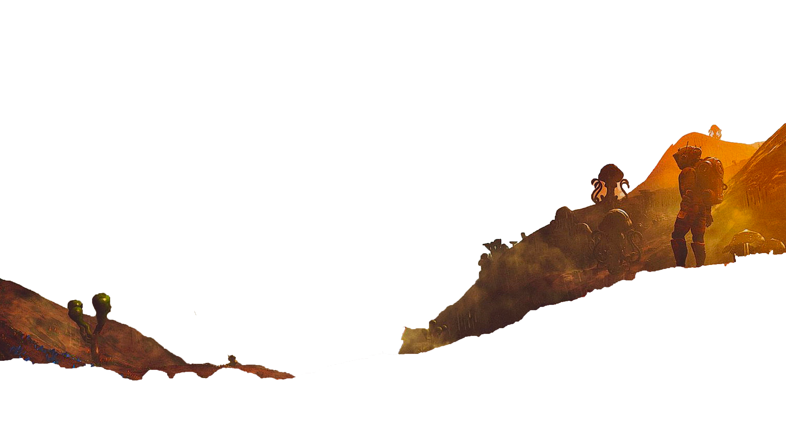

Lees het hele artikel van Marjolijn van Heemstra over het onderzoek naar de tweelingplaneet op de correspondent.
 


Tweelingplaneet
Van Atacama Tot Dwingeloo
Scroll down
The Very Large Telescope
“ Op een berg in de Chileense Atacamawoestijn staat een groep verlaten sterrenkijkers. Het zijn de koepels van de Very Large Telescope, de grootste telescoop op aarde. De nachtelijke hemel boven hen is helderder dan waar ook ter wereld, overal fonkelend licht, maar deze sterrenkijkers zien al wekenlang niets. ”
” De pandemie gaat ook aan dit afgelegen gebied niet voorbij. Er is geen personeel meer om de telescoop te bemannen. De gigantische spiegelkijkers die normaal het heelal in turen zitten opgeborgen in de koepels. Onze ogen naar het universum zijn gesloten. ”
Transitmethode
“ De transitmethode is de meest succesvolle, en ook de meest poëtische. Als exoplaneten voorbij ‘hun’ ster komen, veroorzaakt dat een dip in de straling van die ster. Het is een nauwelijks waarneembare onregelmatigheid, een lichtverlies van rond de 1 procent en meestal zelfs minder. ”
” Een planeet groter dan de aarde is op lichtjaren afstand niet meer dan een ritmische lichtdip, een kosmische knipoog, de kleinst mogelijke schaduw rond een razende zon. ”